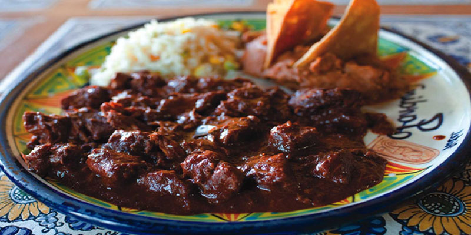

Mole Recipe

Chicken Mole is a special dish in the Mexican community
Mole is a Mexican dish that is normally served in big events. It is one of the staple foods in the Mexican community that is well liked by everyone.
Normally this dish is served with beans and rice. It can be made multiple times either slighty spicy or sweet. This mole will not be the spicy one. Hope you enjoy!
Ingredients
- 1 tablespoon vegetable oil
- 1 (3 pound) chicken, cut into pieces
- 1 bay leaf
- ¼ teaspoon black pepper
- ⅛ teaspoon cayenne pepper
- ½ teaspoon paprika
- ½ teaspoon ground cloves
- ½ teaspoon ground cinnamon
- 1 onion, chopped
- 2 cloves garlic, minced
- 1 (14.5 ounce) can diced tomatoes
- 2 teaspoons brown sugar
- 1 cup chicken broth
- ¼ cup semisweet chocolate chips
- ¼ cup raisins
- 2 tablespoons sesame seeds
Directions
- Heat the vegetable oil in a Dutch oven or large pot over medium-high heat. Cook the chicken pieces in the hot oil until golden brown on all sides,
about 10 minutes.
Remove from the pan and set aside. Reduce heat to medium, and stir in the bay leaf, black pepper, cayenne pepper, paprika,
cloves, and cinnamon until fragrant, about 30 seconds.
Add the onion and garlic; cook and stir until the onion has softened and turned
translucent, about 5 minutes.
- Stir in the tomatoes, brown sugar, and chicken broth, and bring to a simmer over medium-high heat.Once simmering, stir in the chocolate chips until melted, then return the chicken pieces to the pot.
Reduce heat to medium-low, cover, and simmer until the chicken is tender and no longer pink at the bone, 15 to 20 minutes. Stir in the raisins,
and cook 3 minutes longer. Sprinkle with sesame seeds to serve.